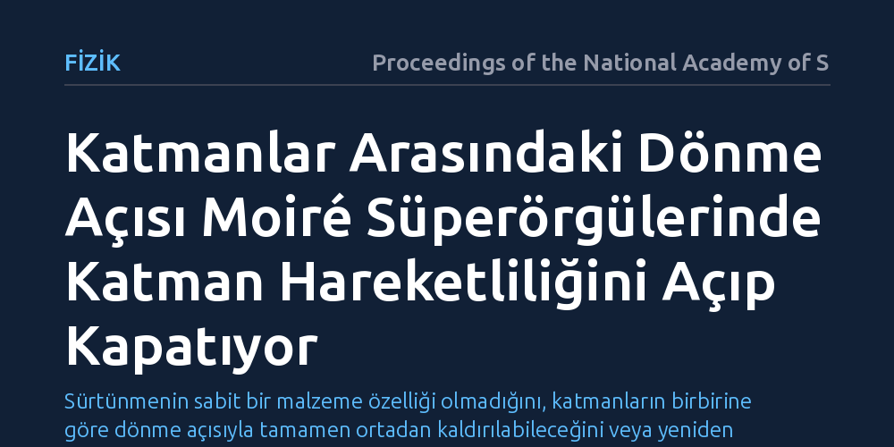

FIZIK · Proceedings of the National Academy of Sciences · 2026-10-07
Araştırmacılar, iki boyutlu katmanlar arasındaki dönme açısının sürtünme ve kayma hareketini nasıl etkilediğini inceledi. Bulgular, moiré süperörgülerinde katmanları döndürmenin atomik kilitlenmeyi kırarak arayüzey hareketliliğini bir anahtar gibi açıp kapatabildiğini gösterdi.
Sürtünmenin sabit bir malzeme özelliği olmadığını, katmanların birbirine göre dönme açısıyla tamamen ortadan kaldırılabileceğini veya yeniden başlatılabileceğini gösterir.

Gündelik hayatımızda birbirine temas eden iki cisim hareket ettiğinde, aralarındaki sürtünme kuvveti hareket enerjisinin bir bölümünü ısıya dönüştürür. Sürtünme fiziği yani triboloji, bu direncin temel kaynağının temas yüzeyindeki atomların karşılıklı geometrik uyumu olduğu varsayımına dayanır.
Atom kalınlığındaki iki boyutlu malzemelerin dünyasında ise bu etkileşim çok daha belirgin hale gelir. İki kristal katman üst üste konulduğunda atomların birbirine nasıl oturduğu, katmanların birbirinin üzerinde kayıp kayamayacağını doğrudan belirler. Bilim insanlarının yanıtını aradığı soru, bu katmanları hafifçe döndürmenin aralarındaki hareketi denetlenebilir bir anahtara dönüştürüp dönüştüremeyeceğiydi.
Araştırma ekibi, iki boyutlu malzemelerin arayüzeyindeki hareketliliği anlamak için moiré süperörgüsü oluşturan yapılara odaklandı. İki periyodik kristal örgü üst üste yerleştirilip aralarında ufak bir dönme açısı oluşturulduğunda, daha geniş periyotlu yeni bir girişim deseni meydana gelir.
Araştırmacılar, atomlar arasındaki kuvvet etkileşimlerini ve potansiyel enerji engellerini hesaplamak için atomik ölçekli fiziksel modellemeler ve arayüzey ölçümleri kullandı. Farklı bağıl dönme açılarında katmanların birbirine uyguladığı kayma direnci ve atomik yerleşim düzeni sistematik olarak karşılaştırıldı.
İncelemeler, iki katman arasındaki açının hareketi belirleyen temel etken olduğunu ortaya koydu. Katmanlar tam hizada durduğunda atomlar karşılıklı potansiyel çukurlarına yerleşerek yüksek bir sürtünme bariyeri oluşturuyor ve katmanların kaymasını engelliyor.
Ancak katmanlar belirli açılarla döndürüldüğünde bu düzenli kilitlenme bozuluyor. Atomik kuvvetlerin birbirini sıfırladığı bu uyumsuz durumda sürtünme neredeyse tamamen ortadan kalkıyor ve katmanlar süpersürtünmesiz biçimde serbestçe kayabiliyor. Dönme açısının değiştirilmesi, sistemin kilitli durum ile serbest hareket eden durum arasında geçiş yapmasını sağlıyor.
Bu sonuç, iki boyutlu yapılarda sürtünmenin ve arayüzey hareketliliğinin yalnızca malzeme seçimine bağlı olmadığını, basit bir geometrik açıyla yönlendirilebileceğini gösteriyor. Arayüzey açısının ayarlanması, nano ölçekli mekanik düzeneklerde hareket kontrolü için somut bir mekanizma sunuyor.
Bununla birlikte, gözlemlenen bu etkinin şimdilik yalnızca atomik düzeyde temiz ve kontrollü nano sistemlerde geçerli olduğunu belirtmek gerekir. Makro boyutlardaki mekanik parçalarda yüzey pürüzlülüğü ve ortam kirliliği bu hassas atomik etkileri gölgeleyebilir; ancak nano aygıtlarda enerji kaybını azaltmak adına önemli bir temel bilgi sağlamaktadır.